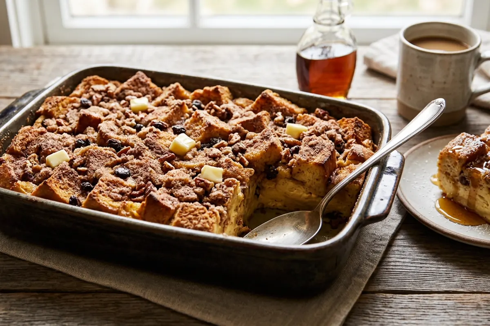

Cinnamon French Toast Casserole

French toast casserole is the answer to feeding a table of people without standing at the stove flipping slices while everyone else eats. Cubes of brioche soak overnight in a cinnamon custard, a brown sugar crumble goes over the top, and the whole dish bakes into something between bread pudding and French toast.
It is designed to be assembled the night before, which means the morning is largely hands-off. A 9x13 inch dish serves ten, making it a practical choice for holidays and family breakfasts.
Ingredients
- 8 cups cubed day-old bread, about 1 lb (brioche, challah or French bread)
- 6 large eggs
- 1 1/2 cups whole milk
- 1/2 cup heavy cream
- 1/2 cup packed brown sugar
- 2 tsp vanilla extract
- 1 1/2 tsp ground cinnamon
- 1/4 tsp salt
- 1/3 cup packed brown sugar
- 1/3 cup all-purpose flour
- 1/2 tsp ground cinnamon
- 4 tbsp cold butter, cubed
Instructions
- Butter a 9x13-inch baking dish and spread the bread cubes in it.
- Whisk the eggs, milk, cream, brown sugar, vanilla, cinnamon and salt. Pour over the bread, pressing to soak it. Cover and refrigerate for at least 1 hour, or overnight.
- Preheat the oven to 350°F (175°C). Mix the topping ingredients with your fingers until crumbly and scatter over the top.
- Bake uncovered for 45 to 50 minutes, until golden and set in the center. A thermometer should read 160°F (71°C).
- Rest for 10 minutes. Serve with maple syrup, berries or powdered sugar.
- Soak the bread long enough, ideally overnight, so the center is not dry.
- Cover with foil if the top browns too fast.
- Let it rest before cutting to allow it to set.
- Fold in blueberries or chopped pecans.
- Add a layer of cream cheese for a stuffed version.
Why this recipe works
Day-old bread is essential. Fresh brioche absorbs the custard too quickly and collapses; bread that has dried for a day keeps its structure and lets the custard set around it. The overnight soak ensures the centre is custardy rather than dry, and the crumb topping gives the surface something to crisp.
Tips for success
- Cut the bread into cubes of about an inch so the custard penetrates evenly.
- Pour the custard over the bread and press gently with a spatula so every cube is damp, then cover and refrigerate overnight.
- Cover with foil for the first half of baking, then uncover so the topping browns without the centre drying.
Substitutions that work
- Challah, French bread or a sturdy white loaf can replace brioche. Avoid soft sandwich bread.
- Whole milk can replace the cream, giving a lighter custard that needs a few extra minutes to set.
- Fold in blueberries, chopped pecans or a layer of cream cheese before the overnight soak.
Storage and make-ahead
Cover leftovers and refrigerate for up to three days. Reheat portions in the microwave for a minute, or the whole dish covered at 325 F for fifteen minutes. It can be frozen baked and thawed overnight, though the topping softens.
Serving suggestions
Serve warm with maple syrup, a dusting of powdered sugar and fresh berries. Bacon or sausages on the side, and coffee, and breakfast is done.
Frequently asked questions
Can I bake French toast casserole without soaking it overnight?
Yes, but give it at least thirty minutes so the bread absorbs the custard. Overnight is better because the centre sets more evenly.
Why is my casserole dry in the middle?
The bread was too fresh or the custard did not reach every cube. Use day-old bread, press the cubes down into the custard and let it soak covered in the fridge.
Can I make this dairy-free?
Replace the milk and cream with oat or soy milk and use a dairy-free butter in the topping. The custard will be slightly less rich but will still set.